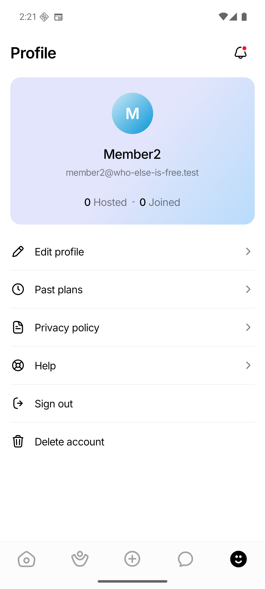
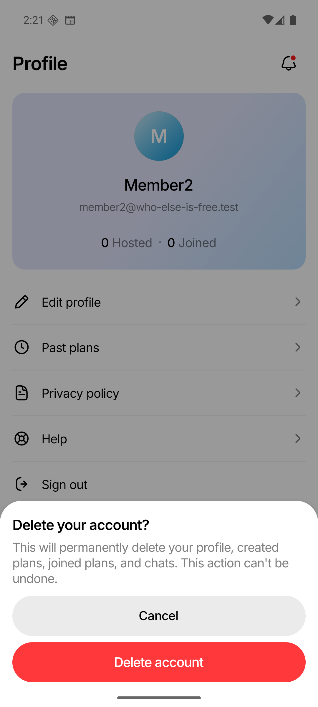
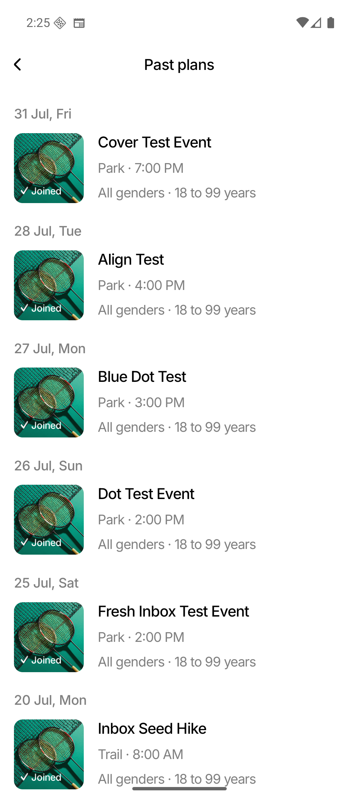
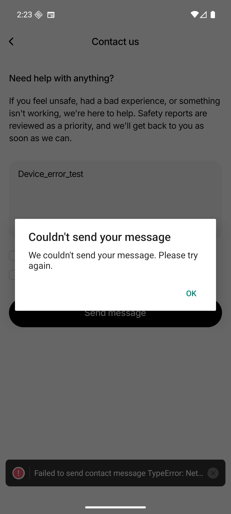
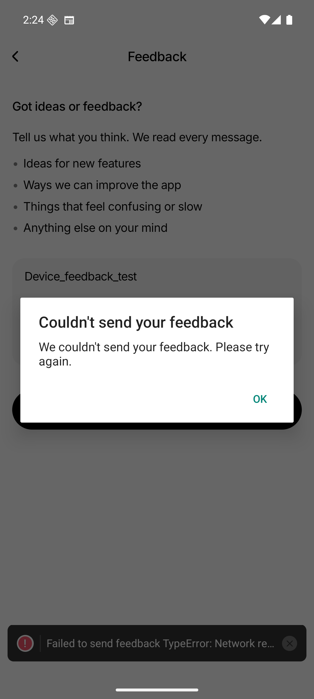

Who Else Is Free · Android verification · 24 August 2026
Profile issue #125 implemented and verified.
The Profile copy, destructive confirmation, Past Plans date/error states, privacy source, and Help submission failure handling now match the issue specification. Raw operational errors remain in development logging and are no longer used as customer-facing copy.
Device verdict: PASS
45 focused tests passed
TypeScript passed
0 lint errors
Android 16 · 1080 × 2400
Issue coverage
| Issue item | Implementation | Evidence |
|---|---|---|
| 1 · Sign out | Profile menu copy changed from “Log out” to “Sign out”. | Device + Jest |
| 2 · Delete account | Cancel action renamed to “Cancel”; the inline failure is always “Couldn't delete account. Please try again.” while the caught error is logged. | Device + Jest |
| 3 · Edit Profile | Confirmed #121 behavior: Add/Change photo accessibility labels, revised permission copy, and generic save error with diagnostic logging. | 3 focused tests |
| 4 · Past Plans |
Absolute headings now use DD Mon, ddd; error and retry copy changed to
“Couldn't load past plans.” and “Please try again”.
|
Device + Jest |
| 5 · Privacy Policy | Removed both obsolete Notion links and removed the parser rule that silently hid them. | Source regression test |
| 6 · Contact us | Fixed alert copy; the underlying error is logged but never inserted into the alert. | Device + Jest |
| 7 · Feedback | Fixed alert copy; the underlying error is logged but never inserted into the alert. | Device + Jest |
| 8 · Name fallback | Removed the unreachable “Your Profile” nullish fallback and render the required authenticated user name directly. | TypeScript + Jest |
Device screenshots





Validation
Focused Jest · PASS
5 suites, 45 tests, 0 failures.
TypeScript · PASS
npm run typecheck completed without errors.
Formatting · PASS
All touched files match Prettier formatting.
Lint · PASS
0 errors; 842 existing repository-baseline warnings.
Device QA · PASS
Profile, delete sheet, Past Plans, Contact, and Feedback exercised on WEIF_API_36.
The full frontend run passed 80 of 82 suites and 1,223 of 1,247 tests. The remaining 24 failures are in the existing Event Details and Chat Thread rendering suites and do not touch this issue’s files or flows. Every targeted suite for issue #125 passed.